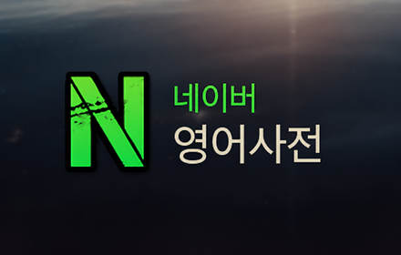
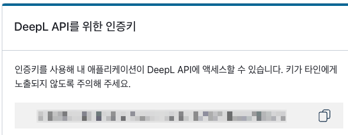
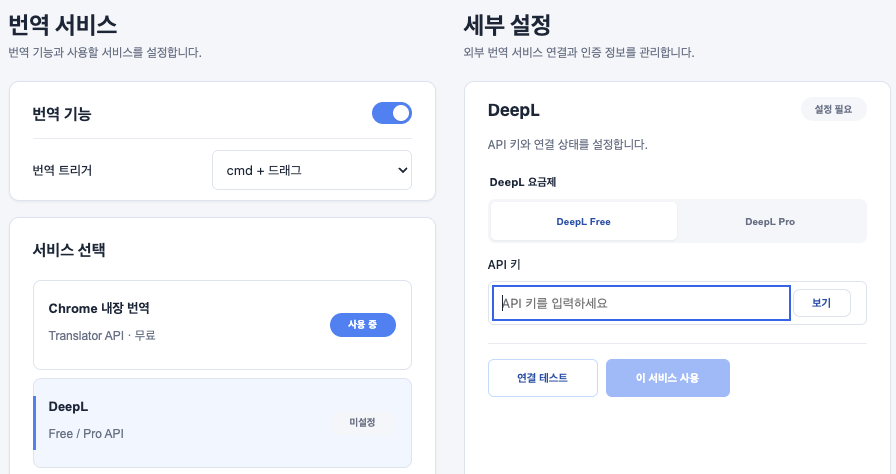
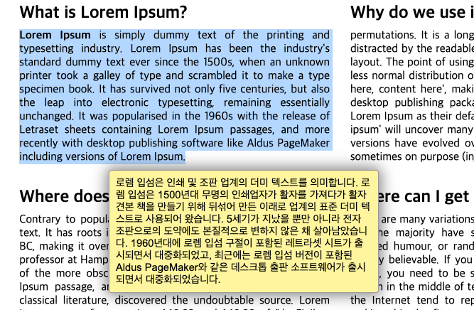

네이버 영어사전 크롬 확장프로그램
DeepL 번역 API
연동하기

네이버 영어사전 · NaverDic은 Chrome 내장 번역, DeepL, Gemini를 문장 번역 서비스로 지원합니다. 이 문서에서는 외부 서비스인 DeepL을 연결하는 방법을 안내합니다.
DeepL API를 사용하려면 설정 페이지의 번역 서비스에서 DeepL을 선택하고 API 키를 저장하세요. DeepL Free와 DeepL Pro 중 사용할 요금제에 맞는 서비스를 선택할 수 있습니다.
DeepL API 인증키 받기
DeepL API 웹사이트에서 DeepL API Free 무료 회원가입을 진행합니다. 무료 회원가입 시 신용카드가 필요합니다. 월 500,000단어까지 사용량 제한이 있지만 별도의 요금은 청구되지 않는다고 합니다.
회원가입 후 DeepL 계정 페이지로 이동해 아래 그림과 같은 DeepL API 인증키를 복사합니다.


이후 웹페이지에서 문장 번역에 해당하는 트리거 키를 누르고 영어 문장이나 단락을 드래그하면 한글 번역이 표시됩니다.
